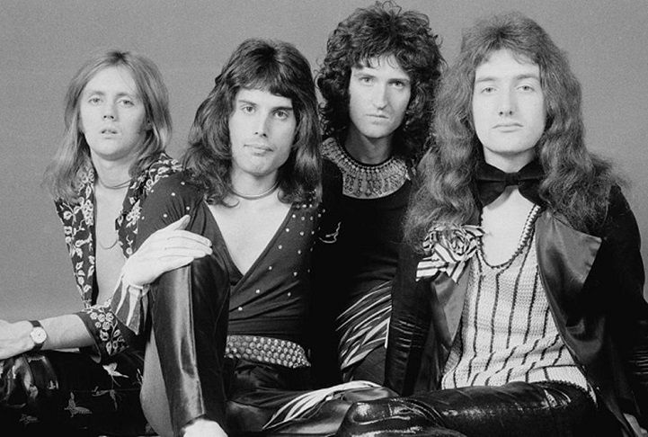

Queen
Queen es una banda británica de rock formada en 1970 en Londres, integrada por el cantante y pianista Freddie Mercury, el guitarrista Brian May y el baterista Roger Taylor. El bajista John Deacon llegaría un año después al grupo para completar la formación clásica. Sus primeros trabajos estuvieron influenciados por el rock progresivo, el hard rock y el heavy metal, pero la banda se aventuró gradualmente en trabajos más convencionales y amigables con la radio incorporando más estilos, como arena rock y pop rock.
